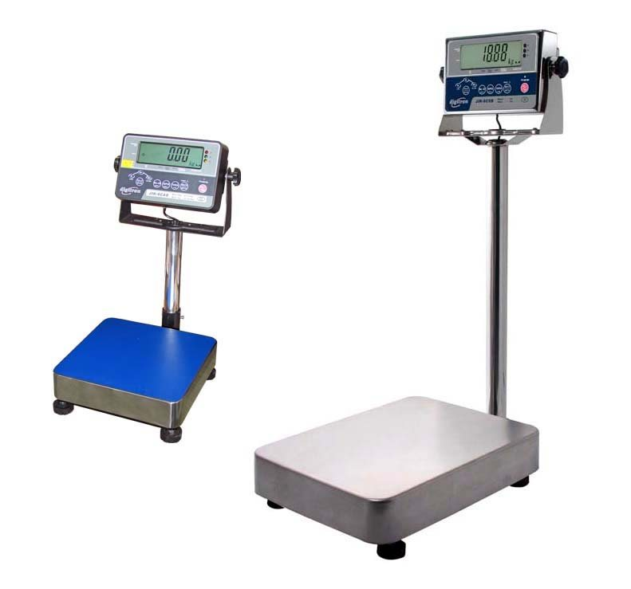

INDUSTRIJSKE VAGE - Platformske vage
* Na zahtjev možemo isporučiti jednopodručne vage povećane preciznosti do 6000 podjeljaka i kapaciteta po izboru.
Vage za različite industrijske aplikacije, platforme, viličari, silosi, mlinovi, dozatori raznih namjena, kranske vage, vage za mesnice, kontrolne vage i brojačice, vage za vaganje stoke, željeznih profila i slično.
Pokazni uređaji i odgovarajući prijemnici tereta ovjereni su od strane DZM i mogu se koristiti u zakonskom mjeriteljstvu u RH i EU.
Tehničke karakteristike
- Izvedba JBJP
- obojeni čelik s mjernom pločom od INOXA
- Izvedba JBJS
- komplet INOX
- Pokazivač
- JIK-6CAB ili JIK-6CSB (INOX)
- Broj pretvornika
- 1
- Dimenzije
- 280 × 280 mm / 332 × 442 mm / 420 × 520 mm
- Kapacitet / podjeljak*
- 30 kg / 10 g / 60 kg / 20 g / 30 kg / 10 g / 60 kg / 20 g / 60 kg / 20 g / 150 kg / 50 g / 300 kg / 100 g
- Opcija
- Dodatna ograda od inox lima za mjernu ploču platforme 420×520 mm
- Izvedba
- komplet INOX
- Pokazivač
- JIK-6CSB (ABS opcija JIK-6CAB)
- Oznaka/dimenzije
- M 30 / 30x30 cm / M 40 / 40x40 cm / M 4050 / 40×50 cm
- Kapacitet / podjeljak*
- 15 kg / 5 g / 30 kg / 10 g / 30 kg / 10 g / 60 kg / 20 g / 150 kg / 50 g / 30 kg / 10 g / 60 kg / 20 g / 150 kg / 50 g
- Izvedba
- obojeni čelik s mj. pločom od INOXA
- Pokazivač
- JIK-6CAB (INOX opcija JIK-6CSB)
- Dimenzije
- 60 x 60 cm 80 x 80 cm
- Kapacitet / podjeljak*
- 60 kg / 20 g 150 kg / 50 g 300 kg / 100 g 150 kg / 50 g 300 kg / 100 g 600 kg / 200 g
- Robustna izvedba
- obojeni čelik s mj. pločom od inoxa AISI 304
- Pokazivač
- u ručki, crveni LED visine 15 mm
- Dimenzije
- mjerna površina 40×40 cm / visina min. 115 mm, maks. 130 mm
- Kapacitet / podjeljak
- 15 kg / 10 g; 30 kg / 10 g / 60 kg / 20 g ; 150 kg / 50 g
- Napajanje
- ugrađeni akumulator 12V, 7Ah za 9 sati rada, priključak za vanjski izvor napona 12V= (12W), adapter napajanja za 220 V~
- Masa vage
- 20 kg
- Ostalo
- tipka za tariranje (100% kap) / podesive noge, libela / radna temp. -10 do 40 °C
- Opcije
- - pokazivač na stupu 53 cm (MA-40 C) / - pokazivač vezan kabelom (MA-40 IS) / - RS-232 komunikacija

Povezani modeli i kategorije
Detaljni podaci i funkcionalnosti
Značajke
- di SKALA JBJ
- di SKALA JPF
- di SKALA MA-40
Platformske vage - di SKALA JBJ
- di SKALA JBJ
- di SKALA JPF
- di SKALA MA-40
Platformske vage - di SKALA M
- di SKALA JBJ
- di SKALA JPF
- di SKALA MA-40
Platformske vage - di SKALA JPF
- di SKALA JBJ
- di SKALA JPF
- di SKALA MA-40